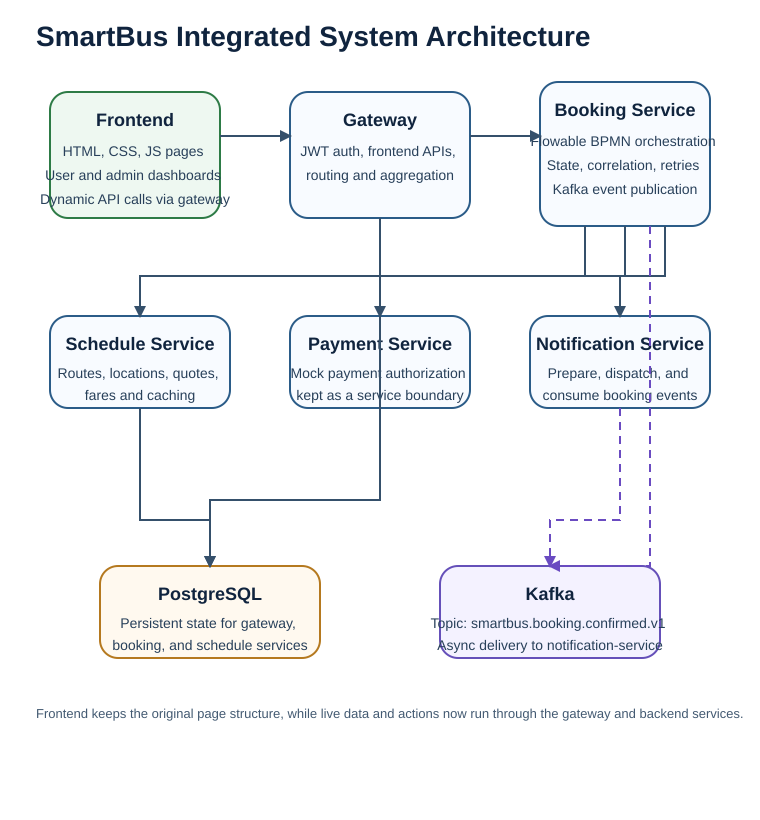
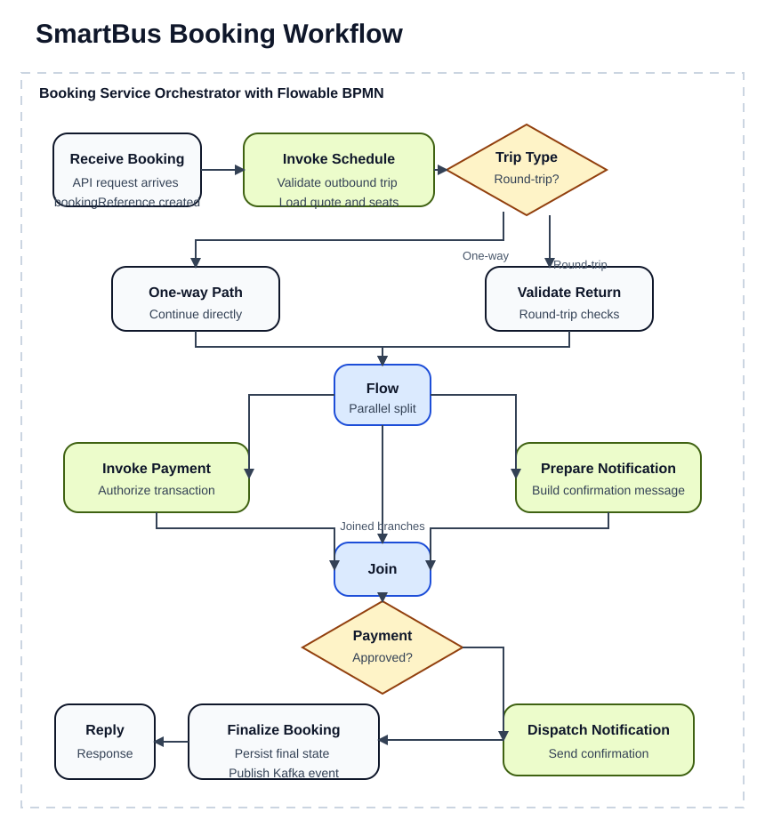
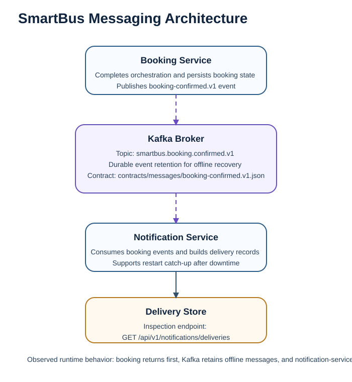

Course submission scope: Phase 2 integration
architecture report
System: SmartBus
Repository roots: frontend/,
backend/, contracts/, docs/,
infra/, orchestration/
SmartBus started as a static frontend prototype located in
frontend/. It contains multiple HTML entry pages, a shared
stylesheet, and shared JavaScript. The project already presents the user
flows needed for a bus ticketing system: public pages for route and fare
browsing, login and registration pages, and user/admin dashboard pages.
The frontend is served with webpack for local development.
The original limitation was that the website behaved like a demo
rather than an integrated system. Trip data was hard-coded in
frontend/js/app.js, and booking behavior was simulated in
the browser with localStorage. There was no server-owned
booking lifecycle, no cross-service messaging, and no durable
operational state. In other words, the Phase I frontend gave SmartBus
the user-experience shell of a ticketing application, but not the
backend capabilities needed for a real working product.
That frontend has now been retained and integrated rather than replaced. Public route, schedule, and fare pages now load backend data through the gateway; the user booking flow now creates real backend bookings; and user dashboards now render persisted booking history from the booking service. Authentication remains lightweight and browser-session based for this assignment, and payment remains a mocked backend service, but the main app flow is no longer browser-only.
SmartBus has now been expanded into a service-oriented backend rooted
at the repository top level rather than inside frontend/.
The backend uses Java 25, Spring Boot 4.0.3, PostgreSQL, and Kafka. The
services are intentionally separated by business capability:
gateway is the frontend-facing entry boundary and
exposes frontend-oriented API composition endpoints.booking-service owns the ticket purchase lifecycle and
orchestration.schedule-service owns route, fare, and quote
reads.payment-service owns mocked payment authorization used
by orchestration.notification-service owns customer confirmation
preparation, dispatch, and delivery visibility.Each service has its own PostgreSQL database boundary. Kafka is used only for asynchronous booking-confirmed events between booking and notification flows. The design keeps the booking service as the process coordinator, while partner services remain independently owned and replaceable.
The current architecture is therefore stronger than the original site in three ways. First, it moves state out of the browser and into durable backend services. Second, it separates the major responsibilities that were previously implicit in the frontend. Third, it now delivers a real integrated product shape: the existing HTML/CSS/JS frontend calls the gateway and backend services without redesigning the SmartBus pages from scratch.

The core business flow is implemented as a custom orchestration in
booking-service. The orchestration entrypoint is
POST /api/v1/bookings/orchestrated-bookings. The process
explicitly models the required orchestration concepts:
receive, invoke, flow,
switch, and reply.
The runtime sequence is:
schedule-service to validate trip
availability.The orchestrated workflow is documented in
orchestration/booking-workflow.yaml,
orchestration/runtime-config.yml, and
docs/orchestration.md. The implementation is in
backend/services/booking-service/src/main/java/com/smartbus/booking/BookingOrchestrationService.java.

This design is appropriate for SmartBus because ticket purchase is inherently a multi-step integration process. A single service method would hide the integration points, but the explicit orchestration makes cross-service behavior, logging, retries, and state inspection visible.
The platform uses Kafka for asynchronous communication after booking
confirmation. Once the orchestration finishes successfully,
booking-service publishes a
booking-confirmed.v1 event.
notification-service consumes that event and records a
delivery entry that can be queried later.
This introduces temporal decoupling. The booking flow can finish without blocking on an always-online downstream notification consumer. Kafka also gives SmartBus a simple recovery path: if the notification consumer is offline, the broker retains the message and the consumer can catch up on restart.

The event contract is versioned in
contracts/messages/booking-confirmed.v1.json, and the
behavior is documented in docs/messaging-demo.md. This
message-driven edge is small by design, but it demonstrates a realistic
enterprise integration pattern inside the SmartBus system.
The system uses bookingReference as the business
correlation key. It is generated once by the booking service and then
reused across the booking response, persisted process state, workflow
logs, partner service requests, and Kafka booking-confirmed events.
This is a strong choice because SmartBus needs one stable identifier that operators, clients, and logs can all use. Without it, retries, recovery, state lookup, and audit behavior would be much harder to reason about.
The persisted lifecycle states are:
RECEIVEDSCHEDULE_VALIDATEDROUND_TRIP_VALIDATEDPAYMENT_PENDINGPAYMENT_AUTHORIZEDNOTIFICATION_PENDINGCONFIRMEDFAILEDThe process state is stored in PostgreSQL and can be retrieved
through GET /api/v1/bookings/{bookingReference}/state. The
detailed rationale is captured in
docs/correlation-design.md.
SmartBus uses two active cache levels in
schedule-service.
The data cache has a five-minute TTL and the output cache has a
thirty-second TTL. Fare updates invalidate both cache layers through
POST /api/v1/schedules/admin/routes/{routeCode}/fare. This
is an appropriate trade-off because route and fare reads are much more
frequent than administrative updates.
Measured test evidence from ScheduleCachingTests
shows:
| Endpoint behavior | Cold read | Warm read |
|---|---|---|
| Route catalog | about 60-65 ms | under 1 ms |
| Quote response | about 62-65 ms | under 1 ms |
The cache design and measured evidence are documented in
docs/cache-strategy.md and
docs/cache-performance.md.
Every exposed REST endpoint now has a versioned OpenAPI contract in
contracts/openapi/. These contracts document the
operations, schemas, examples, validation rules, status codes, and
shared error responses.
The contract set includes:
gateway.v1.yamlbooking-service.v1.yamlschedule-service.v1.yamlpayment-service.v1.yamlnotification-service.v1.yamlThis is important because SmartBus now includes a real frontend-backend integration layer. The frontend pages call gateway-backed APIs for routes, quotes, bookings, and admin fare updates, so machine-readable contracts are now part of the working application boundary rather than only future design preparation. OpenAPI also gives the project a real versioning policy and a predictable change boundary for future frontend changes.
Contract validation is automated through
sh contracts/validate-openapi.sh, backed by
OpenApiContractValidationTests. The operation inventory and
ownership map are documented in
docs/service-catalog.md.
SmartBus now includes explicit resilience behavior in
booking-service for distributed failures. Partner calls are
executed through a dedicated PartnerCallExecutor with:
bookingReference503, 504, and 422
user-facing responsesBusiness rejections such as unavailable trips still return
422. Transport and timeout failures return 503
or 504 after retries are exhausted. Failed bookings are
persisted with lifecycle state FAILED so operators can
still inspect the outcome by correlation key.
The fault-handling design is documented in
docs/fault-strategy.md, and simulated evidence is recorded
in docs/fault-simulations.md. The automated tests
demonstrate transient retry recovery and timeout failure without
crashing the orchestration runtime.
The current SmartBus architecture is small but scales more cleanly
than the original static site. Read-heavy route queries can scale
independently through schedule-service, especially because
the service already uses layered caching. The booking process remains
the main integration hotspot, but it is isolated in one service and
already uses explicit fault handling and correlation state.
There are still clear constraints:
schedule-service
instanceA reasonable scalability path would be:
For the assignment scope, the current design is appropriately scaled: it demonstrates the right enterprise patterns without pretending that every production-hardening concern is already complete.
The SmartBus project now shows a clear before-and-after integration story. The original frontend gave a credible UI but no real server-backed behavior. The new backend introduces service boundaries, orchestration, asynchronous messaging, correlation, caching, versioned contracts, and fault handling. Those pieces are not only architectural groundwork anymore; they now support a working frontend/backend application path.
The frontend in frontend/ was not discarded. It was
integrated. The practical end-state now achieved in the repository
is:
So the current repository should be understood as an integrated SmartBus application with some deliberate simplifications. The backend is no longer a placeholder, and the frontend is no longer only a static shell. The remaining work is production-hardening, not first-time integration.
Key implementation artifacts referenced in this report:
frontend/js/app.jsbackend/gateway/src/main/java/com/smartbus/gateway/FrontendGatewayController.javabackend/services/booking-service/src/main/java/com/smartbus/booking/BookingOrchestrationService.javabackend/services/booking-service/src/main/java/com/smartbus/booking/BookingOrchestrationController.javabackend/services/booking-service/src/main/java/com/smartbus/booking/PartnerCallExecutor.javabackend/services/booking-service/src/main/java/com/smartbus/booking/JdbcBookingProcessRepository.javabackend/services/schedule-service/src/main/java/com/smartbus/schedule/ScheduleCatalogService.javabackend/services/schedule-service/src/main/java/com/smartbus/schedule/CachedQuoteResponseService.javacontracts/openapi/*.yamlcontracts/messages/booking-confirmed.v1.jsondocs/orchestration.mddocs/messaging-demo.mddocs/correlation-design.mddocs/cache-strategy.mddocs/cache-performance.mddocs/fault-strategy.mddocs/fault-simulations.md